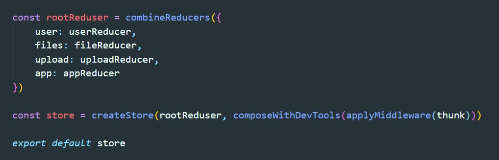
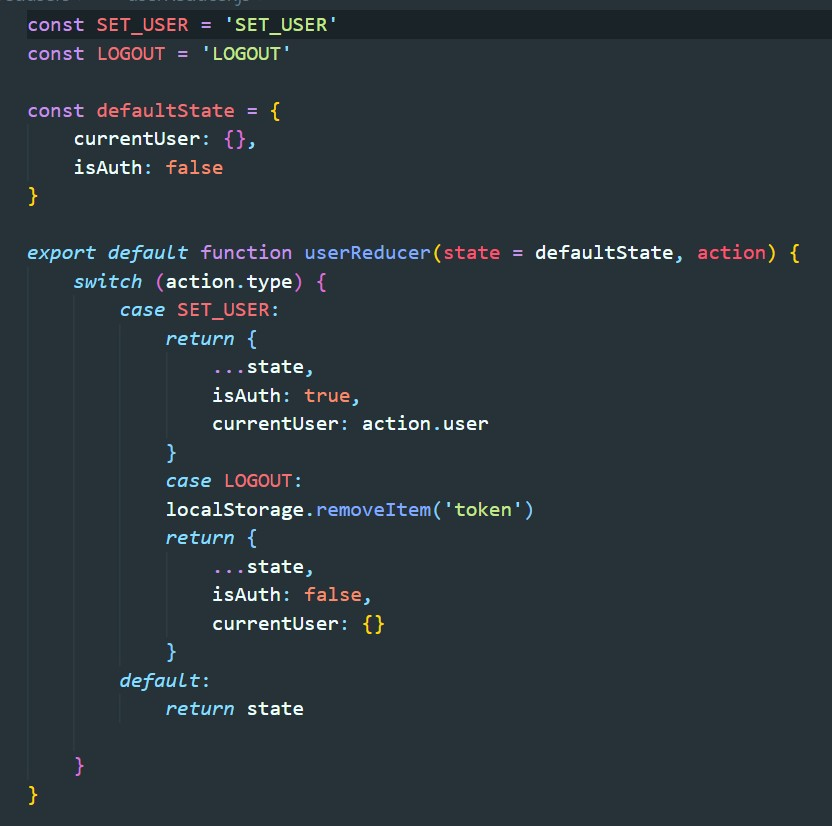
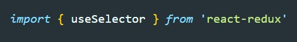
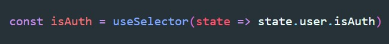

Данный хук выполняет задачу обычного селектора. Селектор - это функция, которая возвращаем определенный участок state
Для работы с этим хуком нам понадобится библиотека react-redux
Создаем store
Создаем reduser который будет формировать state
Импортируем useSelector
Вызываем useSelector. Функция принимает весь state и должна вернуть определенный его участок
